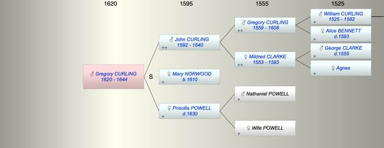

| [Index] |
| Gregory CURLING (1620 - 1644) |
|  |
| b. 1620 at Fordwich, Kent |
| d. abt 1644 aged 24 |
| Parents: |
| John CURLING (1592 - 1640) |
| Priscilla POWELL ( - 1630) |
| Events in Gregory CURLING (1620 - 1644)'s life | |||||
| Date | Age | Event | Place | Notes | Src |
| 1620 | Gregory CURLING was born | Fordwich, Kent | Note 1 | ||
| 1630 | 10 | Death of mother Priscilla POWELL | Note 2 | ||
| 1640 | 20 | Death of father John CURLING (aged 48) | Note 3 | ||
| abt 1644 | 24 | Gregory CURLING died | |||
| Note 1: bap Fordwich 27 Jan 1620 ex LAC |
| Note 2: buried 14 Jan 1631 St Laurence wife of John ex FMP PR |
| Note 3: Buried St Laurence 2 Jan 1641 ex FMP PR |
| Personal Notes: |
|
Gregory Curling – Will summary
TNA download prob/11/192 Image Reference:117 Made 27 Jul 1642 proved 4 Dec 1644 All the following bequests to be made when Gregory’s brother John reaches age of 25 years • to M[is]t[re]ss Moone [Moore?] £20 • to sister Jane £20 • to sister Mildred 10 shillings • to brother William £20 • to brother Henry 10 shillings • to brother Nicholas 5 shillings [Then] • to brother John all lands inherited from Gregory’s father • If John dies without an heir, the land is to go to Gregory’s brother William who must pay the above bequests • to brother John all the moveables at Mr Boulton’s house • Executor Mr Simion [Simon?] Hamond [?] ‘until my brother cometh to the age of one and twenty’ • to the will writer 4 shillings when the will is delivered to the Prorogative Court • to Mr Boulton 40 shillings Witnesses Nathaniel Sopton, Richard Morman, Walter ffold [??] There is no mention of his sisters Mary or Bridget. Gregory was about 24 when he died (burial not found) and his will implies he did not marry. |
| Created on a Mac™ using iFamily for Mac™ on 8 Oct 2023 |